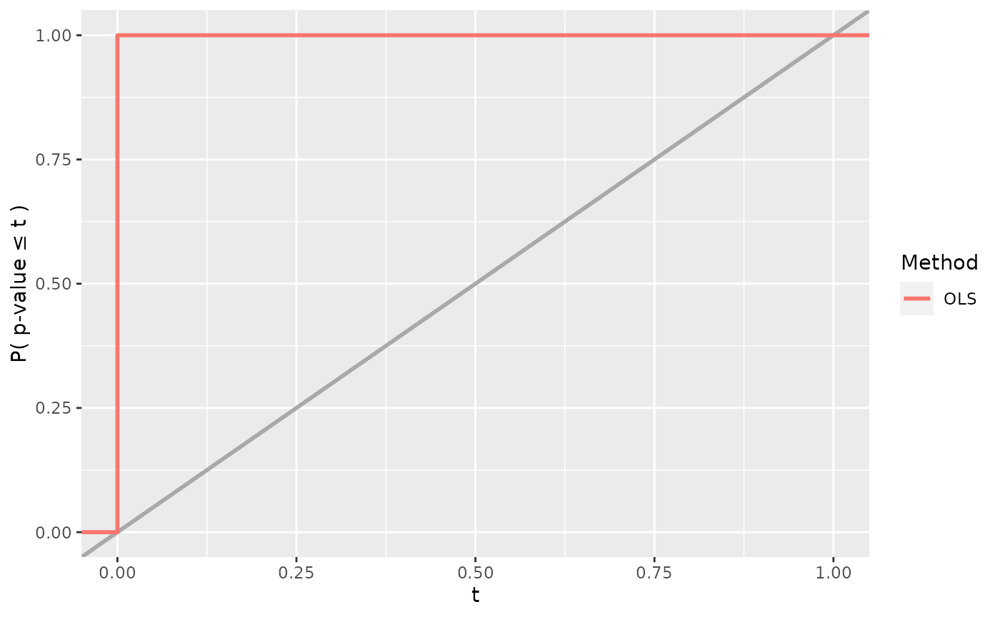
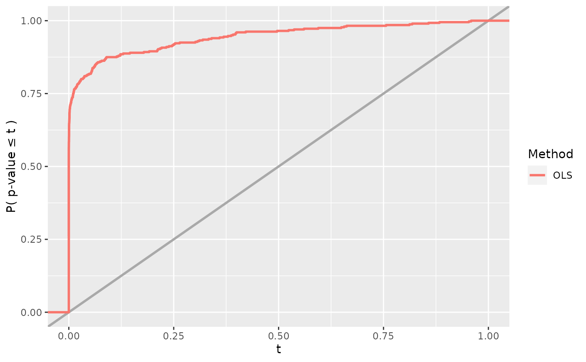

simChef.RmdThe goal of simChef is to seamlessly and efficiently run simulation experiments using a simple grammar. The results of these simulation experiments can also be conveniently viewed in an organized and interactive browser (or html file) (e.g., here). The basic usage of simChef can be summarized as follows:
create_dgp()
create_method()
create_evaluator()
create_visualizer()
experiment <- create_experiment(name = "Experiment") %>%
add_dgp(dgp, name = "DGP1") %>%
add_method(method, name = "Method1") %>%
add_evaluator(evaluator, name = "Evaluator1") %>%
add_visualizer(visualizer, name = "Visualizer1")
results <- experiment$run(n_reps = 100, save = T)
# or alternatively, `run_experiment(experiment, n_reps = 100, save = T)`
create_rmd(experiment)We will next go through a toy example simulation using linear regression.
To begin, we first need to create the individual parts of the simulation experiment recipe. There are four main components/classes and verbs in the simulation experiment:
To create a DGP(), Method(), Evaluator(), or Visualizer(), we can respectively use the create_dgp(), create_method(), create_evaluator(), or create_visualizer() functions. Each create_*() function follows the same syntax and takes in the inputs:
*_fun: the first input is a function from which to simulate data, fit the method, evaluate the metrics, or create a visualization (depending on *).name: (optional) name of the component. Can be specified either here in create_*() or when creating the experiment as we will see later....: additional arguments get passed into the *_fun above.As a toy DGP example, let us create a function to simulate a random Gaussian data matrix \(\mathbf{X}\) of size \(n \times 2\) and a linear response vector \(\mathbf{y}\) of size \(n \times 1\), where
\[\begin{gather*} \mathbf{X} \sim N\left(\mathbf{0}, \begin{pmatrix} 1 & \rho \\ \rho & 1 \end{pmatrix}\right), \\ \mathbf{y} = \mathbf{X} \boldsymbol{\beta} + \boldsymbol{\epsilon},\\ \boldsymbol{\epsilon} \sim N(\mathbf{0}, \sigma^2 \mathbf{I}_n) \end{gather*}\]
dgp_fun <- function(n, beta, rho, sigma) {
cov_mat <- matrix(c(1, rho, rho, 1), byrow = T, nrow = 2, ncol = 2)
X <- MASS::mvrnorm(n = n, mu = rep(0, 2), Sigma = cov_mat)
y <- X %*% beta + rnorm(n, sd = sigma)
return(list(X = X, y = y))
}We can create an object of class DGP() from this function via
dgp <- create_dgp(dgp_fun = dgp_fun, name = "Linear Gaussian DGP",
# additional named parameters to pass to dgp_fun()
n = 200, beta = c(1, 0), rho = 0, sigma = 1)Note that the additional arguments in create_dgp() must be named arguments that match those in dgp_fun.
Given the above DGP, suppose we want to investigate the performance of linear regression, specifically the p-values that are outputted for the non-intercept coefficients from summary.lm().
lm_fun <- function(X, y, cols = c("X1", "X2")) {
lm_fit <- lm(y ~ X)
pvals <- summary(lm_fit)$coefficients[cols, "Pr(>|t|)"] %>%
setNames(paste(names(.), "p-value"))
return(pvals)
}We can create an object of class Method() from this function via
lm_method <- create_method(method_fun = lm_fun)A couple notes here:
lm_fun should include the named outputs from the DGP function dgp_fun (in this case, X and y), as the data generated from the DGP will be automatically passed into the Method.create_method() as was done previously in create_dgp(). However, this is not necessary in this case if we are happy with the default argument for cols in lm_fun().To evaluate the performance of linear regression, one metric (or statistic) of interest could be the rejection probability at some level \(\alpha\), which we compute in the following function.
reject_prob_fun <- function(fit_results, alpha = 0.05) {
group_vars <- c(".dgp_name", ".method_name")
eval_out <- fit_results %>%
dplyr::group_by(across({{group_vars}})) %>%
dplyr::summarise(
`X1 Reject Prob.` = mean(`X1 p-value` < alpha),
`X2 Reject Prob.` = mean(`X2 p-value` < alpha)
)
return(eval_out)
}We can create an object of class Evaluator() from this function via
reject_prob_eval <- create_evaluator(eval_fun = reject_prob_fun, alpha = 0.1)There are a few key points to keep in mind when writing a custom Evaluator function such as reject_prob_fun().
fit_results. fit_results is a placeholder for the tibble that will be outputted by Experiment$fit() and automatically passed in when the experiment is fitted. Note that this argument must be exactly named fit_results or else the Evaluator function will not receive the results from Experiment$fit(). We will see Experiment$fit() in action later, but for now, we can think of fit_results as a tibble containing the results of all (replicate, DGP, method) combinations fitted in the experiment. Naturally, fit_results will have columns named .rep, .dgp_name, .method_name, and any other named arguments that were outputted from the method function (i.e., lm_fun).fit_results by .dgp_name and .method_name as seen in reject_prob_fun() above. In doing so, the rejection probability (across replicates) will be computed for each (DGP, Method) combination separately. However, depending on the goal of the Evaluator function, grouping by .dgp_name and .method_name might not be necessary.As before, additional arguments can be passed into create_evaluator(), and in this case, we have overwritten the default value of alpha with alpha = 0.1.
Lastly, we may want to plot the results from the Method fits (stored in fit_results) and/or the outputs from our Evaluators (stored in eval_results). For example, we could plot the power of the hypothesis test.
power_plot_fun <- function(fit_results, col = "X1") {
plt <- ggplot2::ggplot(fit_results) +
ggplot2::aes(x = .data[[paste(col, "p-value")]],
color = as.factor(.method_name)) +
ggplot2::geom_abline(slope = 1, intercept = 0,
color = "darkgray", linetype = "solid", size = 1) +
ggplot2::stat_ecdf(size = 1) +
ggplot2::scale_x_continuous(limits = c(0, 1)) +
ggplot2::labs(x = "t", y = "P( p-value \u2264 t )",
linetype = "", color = "Method")
return(plt)
}We can create an object of class Visualizer() from this function via
power_plot <- create_visualizer(viz_fun = power_plot_fun)Like the custom Evaluator functions, custom Visualizer functions such as power_plot_fun() can take in the argument fit_results if we want to construct a plot from the method fit outputs. If we want to construct a visualization using the output of our Evaluators (e.g., the output from reject_prob_fun()), the Visualizer function can also take the argument eval_results as input. Note again that the arguments must be exactly named fit_results and eval_results in order to work properly. Beyond creating plots, Visualizers can return tables and more generally, any R Markdown snippet containing results.
As with the other create_* functions, additional arguments that need to pass into the custom Visualizer function can be passed into create_visualizer().
At this point, we have created a DGP (dgp), Method (lm_method), Evaluator (reject_prob_eval), and Visualizer (power_plot). The next step is to create the simulation experiment recipe and add each component to the recipe via
experiment <- create_experiment(name = "Linear Regression Experiment") %>%
add_dgp(dgp, name = "Linear Gaussian DGP") %>%
add_method(lm_method, name = "OLS") %>%
add_evaluator(reject_prob_eval, name = "Rejection Prob. (alpha = 0.1)") %>%
add_visualizer(power_plot, name = "Power")Any number of DGPs, Methods, Evaluators, and Visualizers can be added to the simulation experiment recipe, but each added element to the experiment should have an intelligible name as this will be used in creating the R Markdown results report.
We can easily see the individual parts of the simulation experiment recipe by printing the experiment.
print(experiment)
#> Experiment Name: Linear Regression Experiment
#> Saved results at: results/Linear Regression Experiment
#> DGPs: Linear Gaussian DGP
#> Methods: OLS
#> Evaluators: Rejection Prob. (alpha = 0.1)
#> Visualizers: Power
#> Vary Across: NoneOnce a DGP, Method, Evaluator, or Visualizer has been added to the simulation experiment recipe, the component can be updated using update_dgp(), update_method(), update_evaluator(), or update_visualizer() and removed using remove_dgp(), remove_method(), remove_evaluator(), or remove_visualizer().
Thus far, we have only created the simulation experiment recipe and have not generated any results from the experiment. That is, we have only given the simulation experiment instructions on what to do. To run the experiment, say over 100 replicates, we can do so via
results <- experiment$run(n_reps = 100, save = TRUE)
#> Fitting Linear Regression Experiment...
#> 100 reps completed (totals: 100/100) | time taken: 0.025744 minutes
#> Saving fit results...
#> Fit results saved | time taken: 0.028862 seconds
#> ==============================
#> Evaluating Linear Regression Experiment...
#> `summarise()` has grouped output by '.dgp_name'. You can override using the `.groups` argument.
#> Evaluation completed | time taken: 0.000370 minutes
#> Saving eval results...
#> Eval results saved | time taken: 0.090633 seconds
#> ==============================
#> Visualizing Linear Regression Experiment...
#> Visualization completed | time taken: 0.002076 minutes
#> Saving viz results...
#> Viz results saved | time taken: 0.069476 seconds
#> ==============================or alternatively,
results <- experiment %>%
run_experiment(n_reps = 100, save = TRUE)The output of experiment$run() is a list of length three:
fit_results: output of Method fits (see experiment$fit())eval_results: output of Evaluators (see experiment$evaluate())viz_results: output of Visualizers (see experiment$visualize())
str(results, max.level = 2)
#> List of 3
#> $ fit_results : tibble [100 × 5] (S3: tbl_df/tbl/data.frame)
#> $ eval_results:List of 1
#> ..$ Rejection Prob. (alpha = 0.1): tibble [1 × 4] (S3: tbl_df/tbl/data.frame)
#> $ viz_results :List of 1
#> ..$ Power:List of 9
#> .. ..- attr(*, "class")= chr [1:2] "gg" "ggplot"
results$fit_results
#> # A tibble: 100 × 5
#> .rep .dgp_name .method_name `X1 p-value` `X2 p-value`
#> <chr> <chr> <chr> <dbl> <dbl>
#> 1 1 Linear Gaussian DGP OLS 4.90e-29 0.704
#> 2 2 Linear Gaussian DGP OLS 4.28e-28 0.713
#> 3 3 Linear Gaussian DGP OLS 1.60e-38 0.680
#> 4 4 Linear Gaussian DGP OLS 2.31e-29 0.0115
#> 5 5 Linear Gaussian DGP OLS 8.08e-33 0.127
#> 6 6 Linear Gaussian DGP OLS 8.95e-29 0.980
#> 7 7 Linear Gaussian DGP OLS 6.84e-33 0.385
#> 8 8 Linear Gaussian DGP OLS 6.60e-29 0.116
#> 9 9 Linear Gaussian DGP OLS 4.16e-28 0.765
#> 10 10 Linear Gaussian DGP OLS 1.28e-21 0.530
#> # … with 90 more rows
results$eval_results
#> $`Rejection Prob. (alpha = 0.1)`
#> # A tibble: 1 × 4
#> .dgp_name .method_name `X1 Reject Prob.` `X2 Reject Prob.`
#> <chr> <chr> <dbl> <dbl>
#> 1 Linear Gaussian DGP OLS 1 0.12
results$viz_results
#> $Power
By default, the results are not saved to disk. However, to generate the R Markdown report, we will need to save the results to disk and hence set save = TRUE above.
The experiment can also be run in parallel. For a more detailed walkthrough on how to parallelize the experiment, please see vignette("parallel").
Finally, we can easily visualize all results from the simulation experiment in an html file (generated using R Markdown) or browser.
create_rmd(experiment, open = FALSE)
#> Creating R Markdown report for Linear Regression Experiment...The results can be found here.
Note that in the first run of create_rmd(experiment), a documentation template (i.e., a series of blank .md files) is created for the user to fill out with descriptions of the simulation experiment and its recipe components. These blank .md files can be found in the experiment’s root results directory under docs/. To find the experiment’s root results directory, use experiment$get_save_dir().
In many situations, it is helpful to understand how a method’s performance is affected as we vary a single parameter in the DGP across different values. For instance, what happens to the power as the amount of noise in the linear model increases?
Using the simple grammar of simChef, we can investigate this question by adding a “vary across” component to the simulation experiment.
experiment <- experiment %>%
add_vary_across(dgp = "Linear Gaussian DGP", sigma = c(1, 2, 4, 8))
print(experiment)
#> Experiment Name: Linear Regression Experiment
#> Saved results at: results/Linear Regression Experiment
#> DGPs: Linear Gaussian DGP
#> Methods: OLS
#> Evaluators: Rejection Prob. (alpha = 0.1)
#> Visualizers: Power
#> Vary Across:
#> DGP: Linear Gaussian DGP
#> sigma: num [1:4] 1 2 4 8In add_vary_across(), the dgp argument is the name of the DGP to vary or the DGP object itself. All subsequent arguments should be of the form [param_name] = [param_values], where param_name is the name of the argument/parameter in the DGP function that will be varied, and param_values is a list or atomic vector of values that param_name will take and vary across while all other arguments are kept constant at their base value (see dgp$dgp_params). Here, we are varying the sigma parameter (i.e., the SD of the additive noise term) over values of 1, 2, 4, and 8 within the Linear Gaussian DGP. (Note: we can also vary across parameters in a Method by inputting the method argument instead of the dgp argument in add_vary_across().)
However, when we run the experiment, the results are not quite what we expect. The results are summarized/aggregated across all values of sigma.
vary_results <- experiment$run(n_reps = 100, save = TRUE)
#> Fitting Linear Regression Experiment...
#> 100 reps completed (totals: 100/100) | time taken: 0.067384 minutes
#> Saving fit results...
#> Fit results saved | time taken: 0.044220 seconds
#> ==============================
#> Evaluating Linear Regression Experiment...
#> Evaluation completed | time taken: 0.000445 minutes
#> Saving eval results...
#> Eval results saved | time taken: 0.043989 seconds
#> ==============================
#> Visualizing Linear Regression Experiment...
#> Visualization completed | time taken: 0.000306 minutes
#> Saving viz results...
#> Viz results saved | time taken: 0.092861 seconds
#> ==============================
vary_results$eval_results
#> $`Rejection Prob. (alpha = 0.1)`
#> # A tibble: 1 × 4
#> .dgp_name .method_name `X1 Reject Prob.` `X2 Reject Prob.`
#> <chr> <chr> <dbl> <dbl>
#> 1 Linear Gaussian DGP OLS 0.875 0.112
vary_results$viz_results
#> $Power
To see how different values of sigma affect the experiment results, we need to modify our Evaluator and Visualizer functions. Specifically, in reject_prob_eval, we want to group fit_results by sigma in addition to .dgp_name and .method_name. To do this, we need to add a vary_params argument to our custom Evaluator function. When we run the experiment, vary_params will be auto-filled by a vector of the parameter names that are varied (i.e., those that have been added via add_vary_across()). In this case, vary_params will be auto-filled by c("sigma").
reject_prob_fun <- function(fit_results, vary_params = NULL, alpha = 0.05) {
group_vars <- c(".dgp_name", ".method_name", vary_params)
eval_out <- fit_results %>%
dplyr::group_by(across({{group_vars}})) %>%
dplyr::summarise(
`X1 Reject Prob.` = mean(`X1 p-value` < alpha),
`X2 Reject Prob.` = mean(`X2 p-value` < alpha)
)
return(eval_out)
}
reject_prob_eval <- create_evaluator(eval_fun = reject_prob_fun, alpha = 0.1)Similarly in power_plot_fun, we need to add a vary_params argument to plot the results across different values of sigma.
power_plot_fun <- function(fit_results, vary_params = NULL, col = "X1") {
if (!is.null(vary_params)) {
# deal with the case when we vary across a parameter that is vector-valued
if (is.list(fit_results[[vary_params]])) {
fit_results[[vary_params]] <- list_col_to_chr(fit_results[[vary_params]],
name = vary_params,
verbatim = TRUE)
}
}
plt <- ggplot2::ggplot(fit_results) +
ggplot2::aes(x = .data[[paste(col, "p-value")]],
color = as.factor(.method_name)) +
ggplot2::geom_abline(slope = 1, intercept = 0,
color = "darkgray", linetype = "solid", size = 1) +
ggplot2::stat_ecdf(size = 1) +
ggplot2::scale_x_continuous(limits = c(0, 1)) +
ggplot2::labs(x = "t", y = "P( p-value \u2264 t )",
linetype = "", color = "Method")
if (!is.null(vary_params)) {
plt <- plt + ggplot2::facet_wrap(~ .data[[vary_params]])
}
return(plt)
}
power_plot <- create_visualizer(viz_fun = power_plot_fun)Here, we have also added a pre-processing step to deal with the potential case when we vary across a list of parameter values. This pre-processing step uses a helper function, list_col_to_chr(), to convert a list-type tibble column to a character-type tibble column that is amenable for plotting (unlike the list-type column).
Now, we are ready to update our experiment and run the experiment via
vary_results <- experiment %>%
update_evaluator(reject_prob_eval, name = "Rejection Prob. (alpha = 0.1)") %>%
update_visualizer(power_plot, name = "Power") %>%
run_experiment(n_reps = 100, save = TRUE)
#> Fitting Linear Regression Experiment...
#> 100 reps completed (totals: 100/100) | time taken: 0.070092 minutes
#> Saving fit results...
#> Fit results saved | time taken: 0.062462 seconds
#> ==============================
#> Evaluating Linear Regression Experiment...
#> Evaluation completed | time taken: 0.000222 minutes
#> Saving eval results...
#> Eval results saved | time taken: 0.048107 seconds
#> ==============================
#> Visualizing Linear Regression Experiment...
#> Visualization completed | time taken: 0.000952 minutes
#> Saving viz results...
#> Viz results saved | time taken: 0.109945 seconds
#> ==============================
vary_results$eval_results
#> $`Rejection Prob. (alpha = 0.1)`
#> # A tibble: 4 × 5
#> .dgp_name .method_name sigma `X1 Reject Prob.` `X2 Reject Prob.`
#> <chr> <chr> <dbl> <dbl> <dbl>
#> 1 Linear Gaussian DGP OLS 1 1 0.08
#> 2 Linear Gaussian DGP OLS 2 1 0.12
#> 3 Linear Gaussian DGP OLS 4 0.98 0.08
#> 4 Linear Gaussian DGP OLS 8 0.58 0.11
vary_results$viz_results
#> $PowerNote here we need to use update_* instead of add_* since an Evaluator named “Rejection Prob. (alpha = 0.1)” and a Visualizer named “Power” already exist in the Experiment. Using add_* will throw an error.
For fun, let’s add another plot (in fact, an interactive plot using plotly::ggplotly) to our Experiment and run the Experiment across various values of the coefficient \(\boldsymbol{\beta}_2\) and the correlation \(\rho\) between features in \(\mathbf{X}\). (Note: the visualizer function below (reject_prob_plot_fun) takes in the Evaluator results, stored as eval_results, and plots the rejection probability for the \(\boldsymbol{\beta}_1\) at \(\alpha = 0.1\).)
# create rejection probability plot
reject_prob_plot_fun <- function(eval_results, vary_params = NULL,
alpha = 0.05) {
eval_results <- eval_results$`Rejection Prob. (alpha = 0.1)`
if (is.list(eval_results[[vary_params]])) {
# deal with the case when we vary across a parameter that is vector-valued
eval_results[[vary_params]] <- list_col_to_chr(eval_results[[vary_params]],
name = vary_params,
verbatim = TRUE)
}
plt <- ggplot2::ggplot(eval_results) +
ggplot2::aes(x = .data[[vary_params]], y = `X1 Reject Prob.`,
color = as.factor(.method_name),
fill = as.factor(.method_name)) +
ggplot2::labs(x = vary_params,
y = sprintf("Rejection Probability (alpha = %s)", alpha),
color = "Method", fill = "Method") +
ggplot2::scale_y_continuous(limits = c(0, 1))
if (is.numeric(eval_results[[vary_params]])) {
plt <- plt +
ggplot2::geom_line() +
ggplot2::geom_point(size = 2)
} else {
plt <- plt +
ggplot2::geom_bar(stat = "identity")
}
return(plotly::ggplotly(plt))
}
reject_prob_plot <- create_visualizer(viz_fun = reject_prob_plot_fun, alpha = 0.1)
experiment <- experiment %>%
add_visualizer(reject_prob_plot, name = "Rejection Prob. (alpha = 0.1) Plot")
# run experiment across values of beta_2
vary_beta2_results <- experiment %>%
remove_vary_across(dgp = "Linear Gaussian DGP") %>%
add_vary_across(dgp = "Linear Gaussian DGP",
beta = list(c(1, 0),
c(1, 0.5),
c(1, 1),
c(1, 1.5),
c(1, 2))) %>%
run_experiment(n_reps = 100, save = TRUE)
#> Fitting Linear Regression Experiment...
#> 100 reps completed (totals: 100/100) | time taken: 0.157631 minutes
#> Saving fit results...
#> Fit results saved | time taken: 0.058657 seconds
#> ==============================
#> Evaluating Linear Regression Experiment...
#> Evaluation completed | time taken: 0.000332 minutes
#> Saving eval results...
#> Eval results saved | time taken: 0.050959 seconds
#> ==============================
#> Visualizing Linear Regression Experiment...
#> Visualization completed | time taken: 0.003545 minutes
#> Saving viz results...
#> Viz results saved | time taken: 0.152266 seconds
#> ==============================
# run experiment across values of rho (correlation)
vary_cor_results <- experiment %>%
remove_vary_across(dgp = "Linear Gaussian DGP") %>%
add_vary_across(dgp = "Linear Gaussian DGP",
rho = c(0, 0.2, 0.5, 0.9)) %>%
run_experiment(n_reps = 100, save = TRUE)
#> Fitting Linear Regression Experiment...
#> 100 reps completed (totals: 100/100) | time taken: 0.065929 minutes
#> Saving fit results...
#> Fit results saved | time taken: 0.052427 seconds
#> ==============================
#> Evaluating Linear Regression Experiment...
#> Evaluation completed | time taken: 0.000221 minutes
#> Saving eval results...
#> Eval results saved | time taken: 0.051100 seconds
#> ==============================
#> Visualizing Linear Regression Experiment...
#> Visualization completed | time taken: 0.002002 minutes
#> Saving viz results...
#> Viz results saved | time taken: 0.161082 seconds
#> ==============================Since the Experiment() class is an R6, we need to be careful about clones versus pointers. In the following, it may look like the vary_experiment object has a vary_across component while the experiment object does not have a vary_across component. However, when experiment is piped into add_vary_across(), this is in itself modifying experiment, and vary_experiment is simply pointing to this modified experiment.
experiment <- experiment %>%
remove_vary_across(dgp = "Linear Gaussian DGP")
experiment
#> Experiment Name: Linear Regression Experiment
#> Saved results at: results/Linear Regression Experiment
#> DGPs: Linear Gaussian DGP
#> Methods: OLS
#> Evaluators: Rejection Prob. (alpha = 0.1)
#> Visualizers: Power, Rejection Prob. (alpha = 0.1) Plot
#> Vary Across: None
vary_experiment <- experiment %>%
add_vary_across(dgp = "Linear Gaussian DGP", sigma = c(1, 2, 4, 8))
all.equal(vary_experiment, experiment)
#> [1] TRUE
data.table::address(experiment) == data.table::address(vary_experiment)
#> [1] TRUE
experiment
#> Experiment Name: Linear Regression Experiment
#> Saved results at: results/Linear Regression Experiment
#> DGPs: Linear Gaussian DGP
#> Methods: OLS
#> Evaluators: Rejection Prob. (alpha = 0.1)
#> Visualizers: Power, Rejection Prob. (alpha = 0.1) Plot
#> Vary Across:
#> DGP: Linear Gaussian DGP
#> sigma: num [1:4] 1 2 4 8To modify vary_experiment without making changes to experiment, we need to create a new experiment by explicitly cloning from the old experiment.
vary_experiment <- create_experiment(name = "I am a clone",
clone_from = experiment)
data.table::address(experiment) == data.table::address(vary_experiment)
#> [1] FALSE
vary_experiment
#> Experiment Name: I am a clone
#> Saved results at: results/Linear Regression Experiment
#> DGPs: Linear Gaussian DGP
#> Methods: OLS
#> Evaluators: Rejection Prob. (alpha = 0.1)
#> Visualizers: Power, Rejection Prob. (alpha = 0.1) Plot
#> Vary Across: NoneWhen creating an Experiment from a clone, we are making a deep clone of the parent experiment’s DGPs, Methods, Evaluators, and Visualizers, but not the vary_across component. We thus need to add a vary_across component to vary_experiment using add_vary_across().
# this works without an error
vary_experiment <- vary_experiment %>%
add_vary_across(dgp = "Linear Gaussian DGP", sigma = c(1, 2, 4, 8))We can also add/update DGPs, Methods, Evaluators, and Visualizers to the cloned experiment without modifying the parent experiment.
# add DGP
dgp_new <- create_dgp(dgp_fun = dgp_fun, name = "Linear Gaussian DGP (large n)",
n = 500, beta = c(1, 0), rho = 0, sigma = 1)
vary_experiment <- vary_experiment %>%
add_dgp(dgp_new, "Linear Gaussian DGP (large n)")
vary_experiment
#> Experiment Name: I am a clone
#> Saved results at: results/Linear Regression Experiment
#> DGPs: Linear Gaussian DGP, Linear Gaussian DGP (large n)
#> Methods: OLS
#> Evaluators: Rejection Prob. (alpha = 0.1)
#> Visualizers: Power, Rejection Prob. (alpha = 0.1) Plot
#> Vary Across:
#> DGP: Linear Gaussian DGP
#> sigma: num [1:4] 1 2 4 8
experiment
#> Experiment Name: Linear Regression Experiment
#> Saved results at: results/Linear Regression Experiment
#> DGPs: Linear Gaussian DGP
#> Methods: OLS
#> Evaluators: Rejection Prob. (alpha = 0.1)
#> Visualizers: Power, Rejection Prob. (alpha = 0.1) Plot
#> Vary Across:
#> DGP: Linear Gaussian DGP
#> sigma: num [1:4] 1 2 4 8When generating the R Markdown report summary for an Experiment, the R Markdown will compile results (both evaluation and visualization results) from all saved Experiments under the root results directory experiment$get_save_dir(). Since the results from the many vary_across runs above are all saved under the original experiment’s results directory, then the following will include all of these results in a single document.
create_rmd(experiment, open = FALSE)
#> Creating R Markdown report for Linear Regression Experiment...
#> *Linear Gaussian DGP
#> **Varying beta
#> Rejection Prob. (alpha = 0.1)
#> Power
#> Rejection Prob. (alpha = 0.1) Plot
#> **Varying rho
#> Rejection Prob. (alpha = 0.1)
#> Power
#> Rejection Prob. (alpha = 0.1) Plot
#> **Varying sigma
#> Rejection Prob. (alpha = 0.1)
#> PowerWe can also create the R Markdown report summary by directly specifying the experiment’s root results directory.
create_rmd(save_dir = experiment$get_save_dir(), open = FALSE)The results can be found here.
In addition to showing all results under the root results directory, create_rmd() will automatically generate a blank documentation template for every DGP(), Method(), Evaluator(), and Plot() found in any one of the Experiments under the root results directory. If one would like to generate the documentation template but not create the R Markdown report, see create_doc_template().
There are also several customizable options regarding the aesthetics of the R Markdown output. These can be modified using the rmd_options argument in create_evaluator() and create_visualizer(). For example, we can customize the height and width of the Power plot via
power_plot <- create_visualizer(viz_fun = power_plot_fun,
rmd_options = list(height = 10, width = 8))
experiment <- experiment %>%
update_visualizer(power_plot, "Power")and the number of digits in the evaluation table outputs via
reject_prob_eval <- create_evaluator(eval_fun = reject_prob_fun, alpha = 0.1,
rmd_options = list(digits = 3))
experiment <- experiment %>%
update_evaluator(reject_prob_eval, "Rejection Prob. (alpha = 0.1)")Alternatively, set_rmd_options() can be used to update the R Markdown option for an existing object, rather than having to recreate the Evaluator() or Visualizer() from scratch, e.g.,
experiment <- experiment %>%
set_rmd_options(field_name = "visualizer", name = "Power", show = TRUE,
height = 10, width = 8)To hide the output of an Evaluator() or Visualizer() in the R Markdown report, set show = FALSE in set_rmd_options() or create_*.
Since the R Markdown report heavily relies on the results file structure to organize the report summary, it may be helpful to understand the default saving structure utilized in simChef.
By default, the root results directory is ./results/{EXPERIMENT_NAME}. If the experiment was created by cloning another experiment, then the default results directory is the same as the parent experiment. To change the root results directory, one can specify the desired directory via the save_dir argument in create_experiment() or use the set_save_dir() helper function.
All results from experiment$run(..., save = TRUE) without a vary_across component are then saved under the root results directory. If experiment has a vary_across component, then the results of experiment$run(..., save = TRUE) are saved under ./{ROOT_RESULTS_DIR}/{DGP_OR_METHOD_NAME}/Varying {PARAM_NAME}/.
For a concrete example of the saving structure, please refer to this GitHub directory, where we have stored all saved results from this vignette.
Experiment$run() is the easiest and most concise way of running the simulation experiment from start to finish. However, when debugging and developing the simulation experiment, it may be helpful to run only parts of the experiment so as to not repeat time-consuming, redundant computations. We split up the experimental run into the following three parts:
experiment$fit(): fit the Method(s) in the experiment on multiple replicates of the DGP(s) and return the results from the fitsexperiment$evaluate(): evaluate the experiment through the Evaluator(s) and return the evaluation resultsexperiment$visualize(): create visualizations of the fit/evaluation results from the experiment using the Visualizer(s) and return the visualization results
fit_results <- experiment$fit(n_reps = 100)
#> Fitting Linear Regression Experiment...
#> 100 reps completed (totals: 100/100) | time taken: 0.069293 minutes
#> ==============================
eval_results <- experiment$evaluate(fit_results)
#> Evaluating Linear Regression Experiment...
#> Evaluation completed | time taken: 0.000202 minutes
#> ==============================
viz_results <- experiment$visualize(fit_results, eval_results)
#> Visualizing Linear Regression Experiment...
#> Visualization completed | time taken: 0.002177 minutes
#> ==============================or alternatively,
fit_results <- fit_experiment(experiment, n_reps = 100)
eval_results <- evaluate_experiment(experiment, fit_results)
viz_results <- visualize_experiment(experiment, fit_results, eval_results)Experiment$run() is simply a wrapper around these three functions: fit(), evaluate(), and visualize().
If the results have been saved to disk previously, and one would like to read in these saved results instead of re-running the experiment, the use_cached argument should be set to TRUE. If use_cached = TRUE but the experiment’s results have not yet been saved to disk, then the experiment will proceed to run per usual.
Thus far, we have neither stored nor returned any data from the DGPs since these can be large objects that require high memory loads when n_reps is large. However, one can generate small samples of data from the DGPs in the experiment via
data_list <- experiment$generate_data(n_reps = 1)
str(data_list)
#> List of 1
#> $ Linear Gaussian DGP:List of 4
#> ..$ :List of 1
#> .. ..$ :List of 2
#> .. .. ..$ X: num [1:200, 1:2] 1.7417 -0.6452 -0.0971 0.0767 -0.992 ...
#> .. .. .. ..- attr(*, "dimnames")=List of 2
#> .. .. .. .. ..$ : NULL
#> .. .. .. .. ..$ : NULL
#> .. .. ..$ y: num [1:200, 1] 1.657 -1.08 -1.302 -0.944 -1.963 ...
#> .. ..- attr(*, "params")=List of 1
#> .. .. ..$ sigma: num 1
#> ..$ :List of 1
#> .. ..$ :List of 2
#> .. .. ..$ X: num [1:200, 1:2] -1.149 1.622 -1.126 -0.59 0.741 ...
#> .. .. .. ..- attr(*, "dimnames")=List of 2
#> .. .. .. .. ..$ : NULL
#> .. .. .. .. ..$ : NULL
#> .. .. ..$ y: num [1:200, 1] -1.293 -0.44 0.215 -1.313 0.182 ...
#> .. ..- attr(*, "params")=List of 1
#> .. .. ..$ sigma: num 2
#> ..$ :List of 1
#> .. ..$ :List of 2
#> .. .. ..$ X: num [1:200, 1:2] -0.7113 0.0915 0.1169 1.1258 -1.1399 ...
#> .. .. .. ..- attr(*, "dimnames")=List of 2
#> .. .. .. .. ..$ : NULL
#> .. .. .. .. ..$ : NULL
#> .. .. ..$ y: num [1:200, 1] 1.128 -1.868 0.419 8.815 -0.629 ...
#> .. ..- attr(*, "params")=List of 1
#> .. .. ..$ sigma: num 4
#> ..$ :List of 1
#> .. ..$ :List of 2
#> .. .. ..$ X: num [1:200, 1:2] -1.924 1.255 1.197 1.495 -0.713 ...
#> .. .. .. ..- attr(*, "dimnames")=List of 2
#> .. .. .. .. ..$ : NULL
#> .. .. .. .. ..$ : NULL
#> .. .. ..$ y: num [1:200, 1] 4.59 5.61 11.34 -3.71 8.32 ...
#> .. ..- attr(*, "params")=List of 1
#> .. .. ..$ sigma: num 8or alternatively,
data_list <- generate_data(experiment, n_reps = 1)This might be helpful for exploratory data analysis or further diagnosis of the experiment results.
Other helpful methods for handling the experiment include the get_* family of methods, i.e.,
get_dgps(experiment) # or `experiment$get_dgps`
#> $`Linear Gaussian DGP`
#> DGP Name: Linear Gaussian DGP
#> Function: function (n, beta, rho, sigma)
#> Parameters: List of 4
#> $ n : num 200
#> $ beta : num [1:2] 1 0
#> $ rho : num 0
#> $ sigma: num 1
get_methods(experiment) # or `experiment$get_methods`
#> $OLS
#> Method Name: NULL
#> Function: function (X, y, cols = c("X1", "X2"))
#> Parameters: Named list()
get_evaluators(experiment) # or `experiment$get_evaluators`
#> $`Rejection Prob. (alpha = 0.1)`
#> Evaluator Name: NULL
#> Function: function (fit_results, vary_params = NULL, alpha = 0.05)
#> Parameters: List of 1
#> $ alpha: num 0.1
#> R Markdown Options: List of 3
#> $ digits : num 3
#> $ sigfig : logi FALSE
#> $ options:List of 2
#> ..$ scrollX : logi TRUE
#> ..$ scrollCollapse: logi TRUE
#> Show in R Markdown: TRUE
get_visualizers(experiment) # or `experiment$get_visualizers`
#> $Power
#> Visualizer Name: NULL
#> Function: function (fit_results, vary_params = NULL, col = "X1")
#> Parameters: Named list()
#> R Markdown Options: List of 2
#> $ height: num 10
#> $ width : num 8
#> Show in R Markdown: TRUE
#> $`Rejection Prob. (alpha = 0.1) Plot`
#> Visualizer Name: NULL
#> Function: function (eval_results, vary_params = NULL, alpha = 0.05)
#> Parameters: List of 1
#> $ alpha: num 0.1
#> R Markdown Options: List of 2
#> $ height: num 6
#> $ width : num 10
#> Show in R Markdown: TRUE
get_vary_across(experiment) # or `experiment$get_vary_across`
#> $dgp
#> $dgp$`Linear Gaussian DGP`
#> $dgp$`Linear Gaussian DGP`$sigma
#> [1] 1 2 4 8
#>
#>
#>
#> $method
#> list()
get_save_dir(experiment) # or `experiment$get_save_dir`
#> [1] "./results/Linear Regression Experiment"